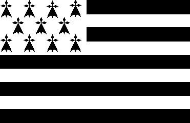

Ton
(See
Seziz Gwengamp
)

|
1. Though neighbours, England and Brittany
|
9. However, they fell on the shore,
Shot by our bullets, more and more; From the five thousands who came No one could go home, for shame! 10. In Guidel, too, they alighted, In the shire of Vannes located. And they were buried in Guidel, As in Camaret, I know well. 11. In Leon, near the Green Island, They once decided they would land; Had so much of their blood to shed That the blue ocean turned red. 12. In Brittany no hill or brae Where no bones are buried away; Torn to pieces by hounds and crows; That rain and the winds did expose." 13. England's soldiers hearing as much Suddenly have stopped, thunderstruck. Tune and words so well sounded That they were all astounded. 14. - England's lads, why do you demur? Are you so tired, that you don't stir?" - If we stop, it is not to rest: These men are Britons, and no jest!- 15. They had not yet finished their plea, When one cried - We're betrayed, let's flee! - And the Saxons rushed to the sea; However none escaped but three. 16. Seventeen hundred fifty-eight, I am giving it to you straight, In September, on a Monday, The English were driven away. |
In September 1758 an English raid led by General Bligh was driven off in Saint Cast by General Morel d'Aubigny. During the fight a detachment of Welsh highlanders had to face a company of Breton soldiers from Tréguier and Saint-Pol-de-Léon. The Welsh happened to sing an anthem the melody of which was popular in Brittany. The Bretons stopped and joined the Welsh in their song. The Welsh came to a stop too and there was no use for the officers of both armies to give the order to shoot in practically the same language! According to the present song, the British command considered this surge of brotherly feeling as a treason that caused them to order the retreat...
H. Corbes, states in his "Short History of Breton Music" published in the monthly magazine Gwalarn, N° 104-105 of July-August 1937 that this tune is identical with "Rhyfelgyrch Gwyr Glamorgan". This title (mixing up Welsh and English words) sounds like 2 popular Welsh songs:
"Rhyfelgyrch gwyr Harlech"
, "The War-song of the Men of Harlech", recounting the siege of Harlech Castle in 1648, and
"Triban gwyr Morganwg"
or "Cadlef gwyr Morganwg" which inspired Walter Scott (1771 - 1832) with a poem,
"The war-song of the men of Glamorgan"
and Joseph Haydn
(1732 - 1809) with the
arrangement, Hob XXXIb:55
. It begins thus:
"Red glows the forge in Striguil's bounds,
And hammers din and anvil sounds,
And armourers, with iron toil,
Bard many a steed for battle's broil.
Foul fall the hand which bends the steel
Around the coursers' thundering heel,
That e'er shall dint a sable wound
On fair Glamorgan's velvet ground!"
It is easy to check that only the latter air may qualify for a rough parallel with the Breton song, but is clearly a different tune. As is Welsh a clearly different language from Breton.
Should our English speaking readers feel hurt by the harsh wording of this poem where the Bretons don't treat very tactfully their neighbours beyond the Channel, they may make sure by reading the text of
"Janedig Flamm"
, for instance, that their French neighbours were ill-used by the Bretons in the very, very same way!
In the Penguern songs collection another ballad relating to an English raid is included. According to Donatien Laurent this event can be traced back to 1460.
However, since the MS holds hand written remarks by Kerambrun, the folklorist Luzel considers it a forgery...